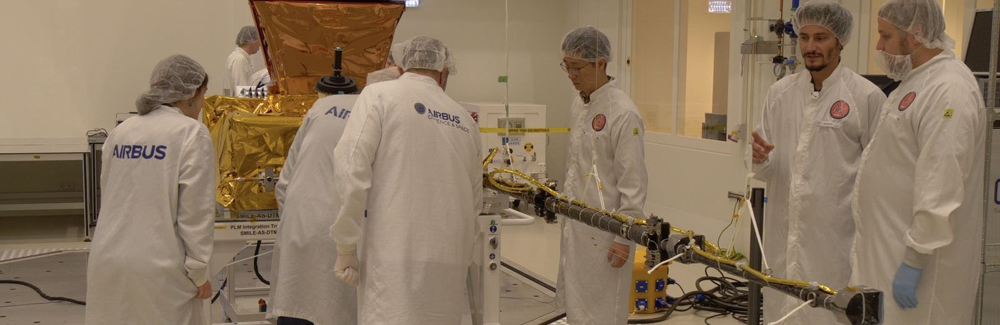
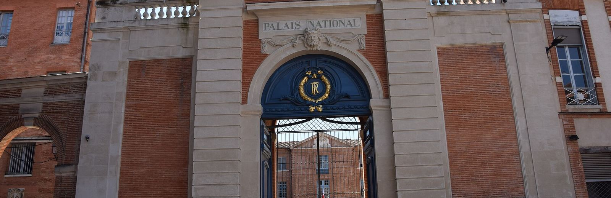
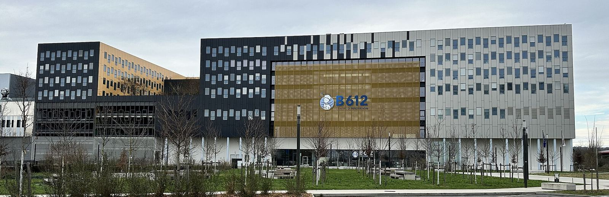
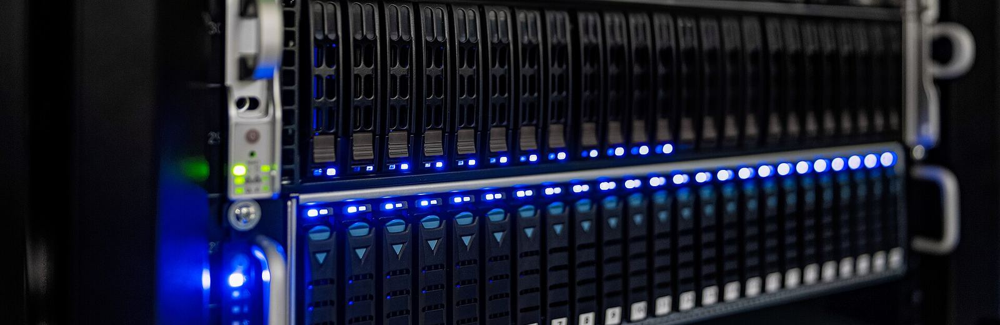
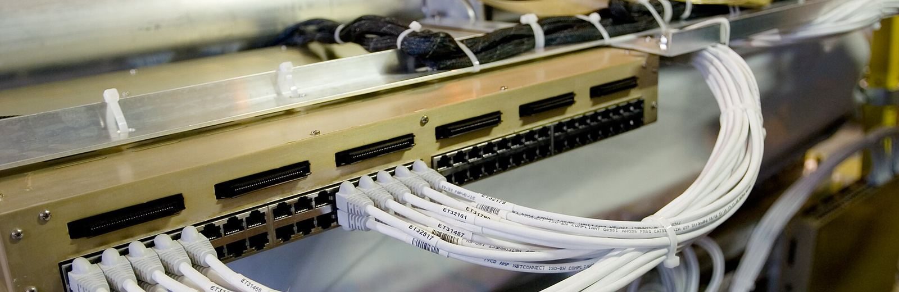
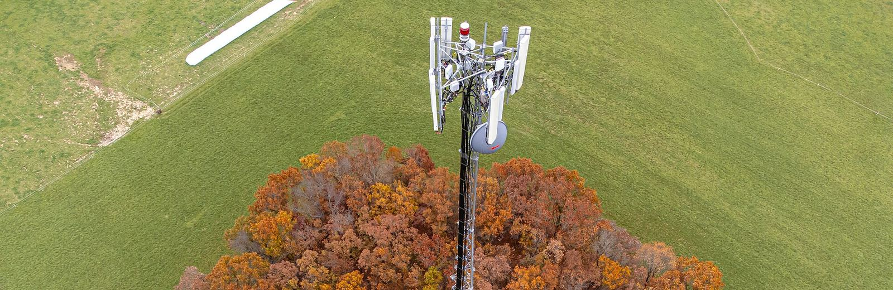
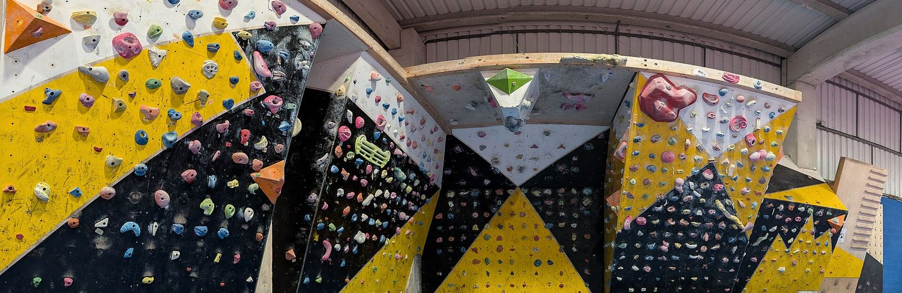

Févr. – juil. 2027 · 6 mois
Projet de fin d'étudesÀ venir
Stage de 6 mois (projet de fin d'études).
- 6 moisde stage
- Févr. 2027début
- Juil. 2027fin
- CadreProjet de fin d'études, diplôme d'ingénieur ENSEEIHT
Stages, projet de fin d'études et projets.

Stage de 6 mois (projet de fin d'études).


Développement d'un site centralisant les annuaires des agents : six sources de données fusionnées en un annuaire unique et à jour. L'outil est en production, à usage interne.


Travaux de recherche sur les LLM spécialisés en cybersécurité et sur les IDS/IPS fondés sur des réseaux de neurones.


Administration du cluster Proxmox de l'association : six hyperviseurs, stockage distribué Ceph sur trois nœuds et migration à chaud des machines virtuelles. Une vingtaine de VM hébergent les services des étudiants.


Conception et configuration du réseau complet d'une entreprise dans un environnement virtualisé : routage, VPN, serveurs web et services d'infrastructure.

Simulation d'un handover entre deux antennes 4G : reconfiguration d'une carte SIM et observation du basculement d'une cellule à l'autre.


Reprise et maintenance de la plateforme du club Gr'INP, conçue en 2024 par un autre membre : comptes adhérents, calendrier et inscriptions aux séances, pour les quelque 200 adhérents.